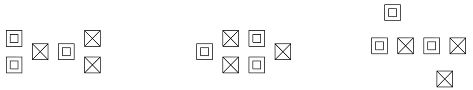
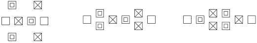
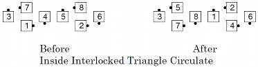
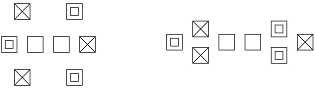
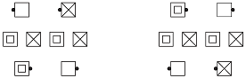
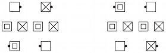

These consist of two Triangles, whose center-most dancers are working with the furthest outside dancers in a Triangle.
Examples of Interlocked Triangles:

Caution: Callers are cautioned that Interlocked Triangles were added to C-2 in 2010 and they have never received much use even at C-3 or C-4. While the entire “family” was added and defined, some of its members (e.g., Outside Interlocked Triangles) are very difficult to see and don’t necessarily dance well. Caller judgment needs to be exercised.
Inpoint/Inside/Outpoint/Outside Interlocked Triangles
Various formations, including Twin Diamonds and Point-to-Point Diamonds, contain Interlocked Triangles.Inside Interlocked Triangles
The Center 6 form the Triangles.

Outside Interlocked Triangles
The Outside 6 form the Triangles.
Note: These triangles may be easier for the dancers to identify with the phrase “Ignore the center 2, Interlocked Triangle …”.
Inpoint Interlocked Triangles
Each point facing in is an apex.
Outpoint Interlocked Triangles
Each point facing out is an apex.